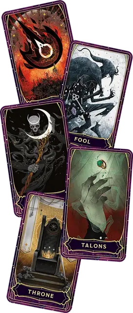

Колода многих вещей
Deck of Many Things
Чудесный предмет, легендарный

Рекомендованная стоимость 200 000 ЗМ
Эту колоду обычно находят в коробке или мешочке; карты в этой колоде сделаны из слоновой кости или пергамента. Большая (75% шанс) часть таких колод содержит только тринадцать карт, но прочие состоят из двадцати двух карт. Используйте соответствующий столбец таблицы Колода многих вещей при определении вытягиваемых из колоды карт.
Перед тем, как тянуть карты, вы должны объявить, сколько собираетесь вытянуть, а затем тяните их по одной. Карты, взятые сверх названного числа, не будут иметь эффекта. Как только вы вытянули карту в рамках объявленного количества, её магия немедленно начинает действовать. Вы должны тянуть следующую карту не позднее, чем через час после предыдущей. Если вы не вытянули названное число карт, оставшиеся сами вылетают из колоды и вступают в силу одновременно.
Как только карта вытягивается, она исчезает. Если это не Дурак и не Шут, карта вновь появляется в колоде, что позволяет вытянуть её повторно. (Если Дурак или Шут покинула колоду, при повторном выпадении этой карты — совершайте повторный бросок по таблице.)
Колода многих вещей
| 1к100 (Колода из 13 карт) | 1к100 (Колода из 22 карт) | Карта |
| — | 01-04 | Головоломка |
| — | 05-09 | Драгоценность |
| — | 10-13 | Дурак |
| 01-08 | 14-18 | Звезда |
| 09-16 | 19-23 | Ключ |
| — | 24-27 | Когти |
| — | 28-32 | Комета |
| 17-24 | 33-37 | Луна |
| — | 38-42 | Мудрец |
| 25-32 | 43-46 | Огонь |
| 33-40 | 47-50 | Плут |
| 41-44 | 51-54 | Пустота |
| — | 55-59 | Равновесие |
| 45-52 | 60-63 | Разорение |
| 53-60 | 64-68 | Рыцарь |
| 61-68 | 69-73 | Солнце |
| — | 74-78 | Судьба |
| 69-76 | 79-83 | Трон |
| — | 84-87 | Тюрьма |
| 77-84 | 88-91 | Череп |
| 85-92 | 92-96 | Шут |
| 93-00 | 97-00 | Эвриала |
Головоломка
Ваше значение Мудрости навсегда уменьшается на 1к4 + 1 (но не ниже 1). Вы можете вытянуть ещё одну карту из колоды; эта дополнительная карта не считается одной из объявленного вами количества карт.
Драгоценность
У ваших ног появляется либо двадцать пять ювелирных украшений стоимостью 2000 ЗМ каждое, либо пятьдесят драгоценных камней стоимостью 1000 ЗМ каждый.
Дурак
В течение следующих 72 часов вы совершаете с Помехой все Тесты к20. Вытяните ещё одну карту из колоды; эта дополнительная карта не считается одной из объявленного вами количества карт.
Звезда
Увеличьте значение одной из ваших характеристик на 2, но не выше 24.
Ключ
В ваших руках появляется магическое оружие, Редкое или ещё большей редкости, которым вы владеете (по выбору Мастера).
Когти
Все магические предметы, которые вы несёте и носите, распадаются. Ваши Артефакты не уничтожаются, но исчезают.
Комета
В следующий раз, когда вы вступите в сражение с одним Враждебным существом или более, при броске Инициативы вы можете выбрать одного из них как супостата. Если в этом сражении вы опустите Хиты супостата до 0, в течение следующего года вы будете совершать с Преимуществом спасброски от Смерти. Если вы не выберете супостата или если Хиты супостата опустит до 0 кто-либо иной, карта не имеет эффекта.
Луна
Вы получаете возможность 1к3 раз сотворить заклинание Желание.
Мудрец
В любой момент в течение года с момента вытягивания этой карты вы можете заняться медитацией и задать вопрос, мысленно получая правдивый ответ на этот вопрос.
Огонь
Могущественный дьявол становится вашим врагом. Он стремится вас уничтожить, смакуя ваши страдания перед тем, как убить вас. Эта вражда длится до вашей или его гибели.
Проблема вражды
Две карты в колоде многих вещей могут сделать персонажа врагом другого создания. С картой Огонь вражда явная; персонаж должен будет неоднократно испытать на себе дьявольские поползновения. Поиск этого дьявола не должен быть простой задачей, и искатель приключений должен несколько раз столкнуться с союзниками и последователями дьявола, прежде чем сможет сразиться с ним самим.
Если же говорить о карте Плута, то вражда будет тайной, она будет проистекать от кого-то, кажущегося другом или союзником. Мастеру следует ждать, проявляя эту вражду лишь в достаточно драматический момент, и заставляя персонажа гадать, кто же станет предателем.
Плут
НИП по выбору Мастера становится Враждебен по отношению к вам. Его личность вам не известна до тех пор, пока он сам или кто-либо ещё не раскроет эту вражду. Остановить эту вражду сможет по меньшей мере заклинание Желание или божественное вмешательство.
Пустота
Ваша душа вырывается из тела и заключается в некоем предмете в месте, выбранном Мастером. Это место охраняет сильное создание или даже группа таких созданий. Пока ваша душа похищена, ваше тело недвижимо, не стареет и не требует пищи, воды и воздуха. Заклинание Желание не может вернуть вашу душу в тело, но может раскрыть местонахождение предмета, вмещающего вашу душу. Вы больше не тянете карты.
Равновесие
Вы можете увеличить значение одной из ваших характеристик на 2, но не выше 22 и при условии, что при этом вы также уменьшите значение одной из прочих ваших характеристик на 2, и вы не можете уменьшить значение характеристики, если оно уже равно 5 или меньше. Вы можете также выбрать не повышать и не понижать ваши характеристики, и в этом случае карта не имеет эффекта.
Разорение
Вы теряете все богатства, которые вы носите или которыми владеете, кроме магических предметов. Движимое имущество исчезает. Предприятия, строения и земли, которыми вы владели, пропадают таким способом, который оказывает наименьшее влияние на действительность. Любые документы, подтверждающие ваши права собственности на утерянное имущество, тоже исчезают. Если вы обладаете Бастионом, то он уничтожается катастрофой, на которую вы не можете повлиять.
Рыцарь
Вы получаете на службу Рыцаря, который магическим образом появляется в незанятом пространстве в пределах 30 футов от вас. Рыцарь имеет то же мировоззрение, что и вы, и будет верно служить вам до смерти, полагая, что судьба привела его к вам. Работая с Мастером, создайте имя и предысторию этого Неигрового Персонажа. По желанию мастера рыцарь может быть представлен другим блоком статистики.
Солнце
При вас появляется магический предмет на выбор Мастера. Кроме того, вы получаете 10 Временных хитов на каждом рассвете, но только пока не умрёте.
Судьба
Ткань реальности разворачивается и складывается вновь, позволяя вам стереть одно событие, как будто его никогда не случалось, или избежать участия в нём. Вы можете использовать магию карты сразу, как только вытянете её, или в любое другое время, но только пока не умрёте.
Трон
Вы получаете владение и Экспертность в одном из навыков на ваш выбор: Запугивание, История, Проницательность или Убеждение. Кроме того, вы получаете право владения находящейся где-то в мире небольшой цитаделью; сейчас, однако, эта крепость занята монстрами, и прежде чем объявить её своей, её придётся очистить от этих монстров.
Тюрьма
Вы исчезаете и оказываетесь в состоянии приостановленной жизнедеятельности в межпространственной сфере. Всё, что вы носили или несли, исчезает вместе с вами, за исключением Артефактов: Артефакты остаются в занимаемом вами до исчезновения пространстве. Вы заключены в эту тюрьму до тех пор, пока не будете найдены и освобождены. Вы не можете быть обнаружены с помощью магии Прорицания, но заклинание Желание способно определить местонахождение вашей тюрьмы. Вы больше не тянете карты.
Череп
В ближайшем к вам незанятом пространстве появляется Аспект смерти, призрачный скелет, одетый в изодранную чёрную одежду и вооружённый дымчатой косой. Аспект нападает только на вас и исчезает, если его Хиты опускаются до 0 или если вы умираете. Если ваш союзник наносит Аспекту урон, то он также призывает Аспекта смерти, появляющегося в ближайшем к этому союзнику незанятом пространстве, и нападающего только на этого союзника. И вы, и ваши союзники можете призвать только по одному Аспекту смерти за вытянутую из колоды карту. Существо, убитое Аспектом, не может быть возвращено к жизни.
Шут
В течение следующих 72 часов вы совершаете с Преимуществом все Тесты к20. Вместо этого вы можете вытянуть ещё две карты из колоды; эти дополнительные карты не считается в объявленное вами количество карт.
Эвриала
Напоминающий медузу образ на карте проклинает вас. Пока на вас лежит это проклятье, вы совершаете спасброски с штрафом -2. Только бог или магия карты Судьба может закончить действие этого проклятья.